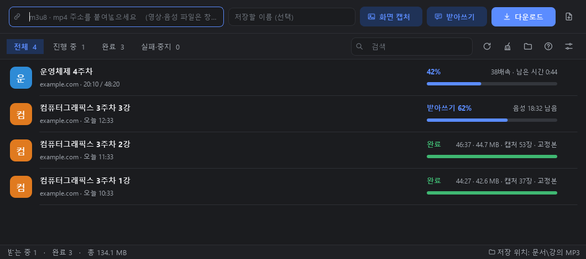

Windows App
강의 MP3 다운로더
온라인 강의를 MP3로 받고, 강의 화면을 캡처하고, 받아쓰고, 요약까지. 복습에 필요한 걸 한 프로그램에서 합니다.

Features
하는 일
강의 → MP3
강의 영상 주소(m3u8 · mp4)나 크롬 확장으로 받아 MP3로 저장합니다. 여러 개를 동시에 받고 목록으로 관리합니다.
화면 캡처
슬라이드·코드 화면이 바뀔 때마다 캡처해 이미지와 시간표로 남깁니다. 영상을 따로 더 받지 않습니다.
받아쓰기
이 컴퓨터에서 Whisper로 받아씁니다. 45분 강의에 20분쯤(6코어 노트북 기준). 읽기 화면에서 시간을 누르면 그 부분부터 재생됩니다.
선택 설치교정
잘못 들은 전문용어·숫자·띄어쓰기를 Claude Code가 바로잡습니다. 화면 캡처가 있으면 슬라이드를 보고 용어를 맞춥니다.
선택 설치 · Claude Pro강의노트
받아쓰기와 캡처 화면을 시간순으로 합친 .md 파일을 만듭니다. 복습하거나 요약을 맡기기 좋습니다.
요약
1강·2강·3강처럼 나뉜 강의도 하나로 요약합니다. 짧게(배운 점 위주) 또는 자세히(내용 정리).
선택 설치 · Claude ProInstall
설치
- 설치 파일을 실행합니다. 관리자 권한은 필요 없습니다. "Windows의 PC 보호" 창이 뜨면 추가 정보 → 실행을 누르세요. 코드 서명을 하지 않은 프로그램이라 뜨는 창입니다.
- 쓸 기능을 고릅니다. MP3 받기 · 화면 캡처 · 크롬 확장은 항상 설치되고, 받아쓰기와 교정·요약은 골라서 설치합니다.
- 설치가 끝나면 프로그램이 열리면서 고른 기능을 설치합니다. 받아쓰기 부품(약 90MB)을 내려받아 확인하고, Claude Code는 공식 설치 창과 로그인 창이 차례로 열립니다.
- 나중에 바꾸려면 설정(오른쪽 위 맨 끝 버튼) → 기능 관리…에서 설치하거나 제거합니다.
Chrome Extension
크롬 확장으로 더 쉽게
강의 영상을 재생하면 확장이 영상 주소를 찾아 프로그램으로 보내 줍니다. 처음 한 번만 설치하면 됩니다.
- 크롬 주소창에
chrome://extensions를 입력하고 오른쪽 위 개발자 모드를 켭니다. - 압축해제된 확장 프로그램을 로드합니다를 누르고 설치 폴더 안의
chrome-extension폴더를 고릅니다. 프로그램의 ? 버튼 도움말에 이 폴더로 가는 링크가 있습니다. - 주소창 옆 퍼즐 아이콘에서 강의 MP3 받기를 고정합니다. 이제 강의를 재생하고 아이콘 → 앱으로 보내서 받기를 누르면 됩니다.
Requirements
필요한 것
| 기본 | Windows 10/11 64비트 |
|---|---|
| 받아쓰기 | 디스크 약 2GB(부품 약 230MB + 음성인식 모델 약 1.6GB). 처음 한 번 인터넷으로 받습니다. 그래픽카드는 필요 없습니다. |
| 교정·요약 | Claude Code와 Claude Pro 이상 요금제 (무료 요금제로는 쓸 수 없습니다). 쓰는 사람의 Claude 사용량에서 차감됩니다. |
Notes
알아둘 점
받은 강의는 문서\강의 MP3에, 목록과 설정은 사용자 앱 데이터 폴더에 저장됩니다. 프로그램을 지우거나 업데이트해도 그대로 남습니다.
강의 영상 주소에는 유효기간이 있어 시간이 지나면 받아지지 않을 수 있습니다. 그때는 강의 페이지에서 주소를 새로 복사해 항목을 우클릭 → 새 주소로 다시 받기를 누르세요.
받은 강의 파일과 받아쓴 글은 본인 학습용으로만 쓰고 다른 사람에게 나누지 마세요. 강의의 저작권은 강의를 만든 분께 있습니다.
Changelog
버전 기록
| 1.0.0 · 2026-09-30 | 첫 배포판. MP3 받기, 화면 캡처, 받아쓰기·교정, 강의노트, 요약, 설치할 때 기능 고르기. |
|---|